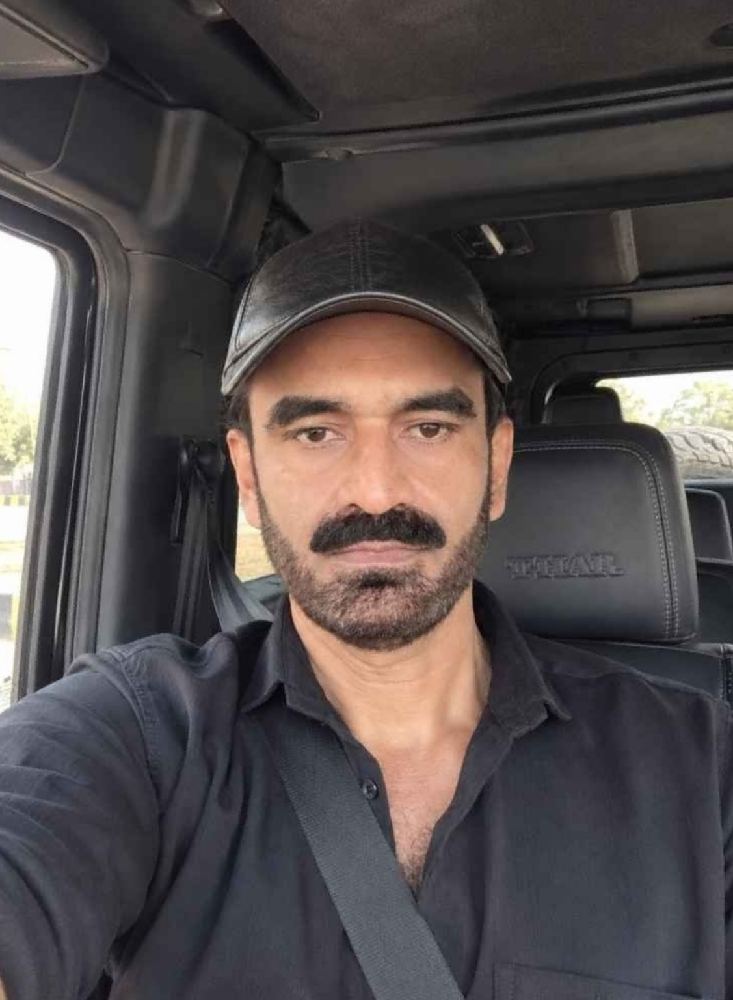

RAUF BAHERUNI
FACEBOOK 360 PANORAMA STUDIO
Professional 360 Panorama
Photo → 2:1 equirectangular JPG → GPano metadata
फोटो चुनें।
RAUF BAHERUNI
Signature ऊपर-दाएँ corner में लगती है।
यह browser-only free renderer है। GPano/XMP metadata export में जोड़ी जाती है। एक single 2D photo से unseen पीछे का असली दृश्य recover नहीं हो सकता; उसके लिए AI reconstruction चाहिए।